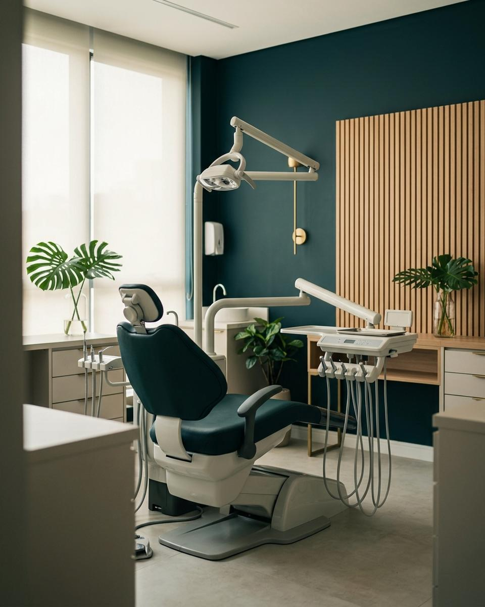
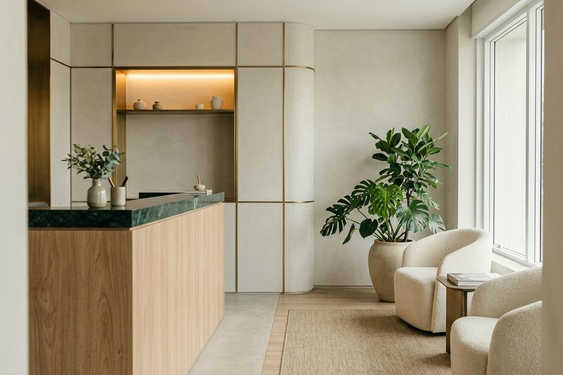
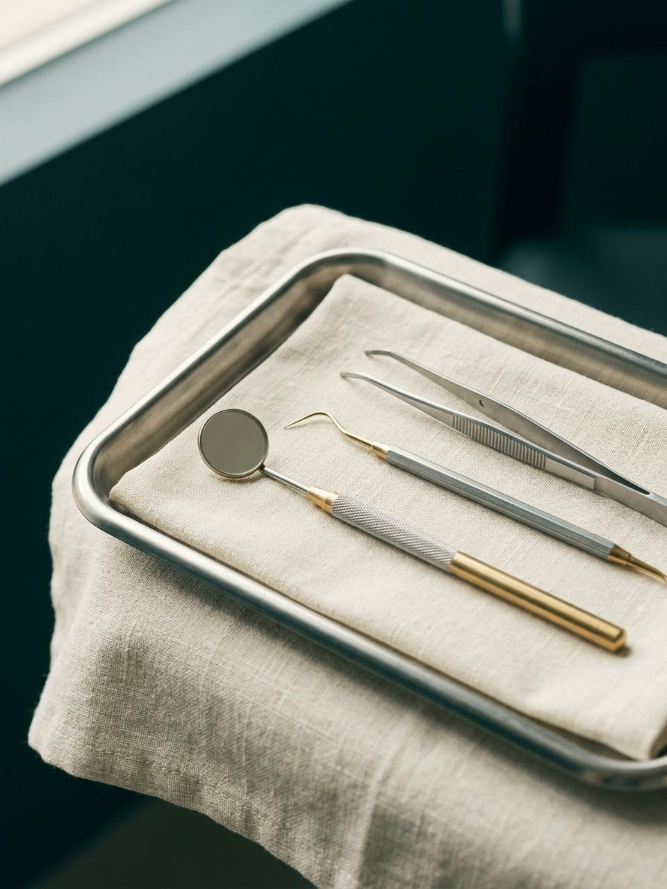
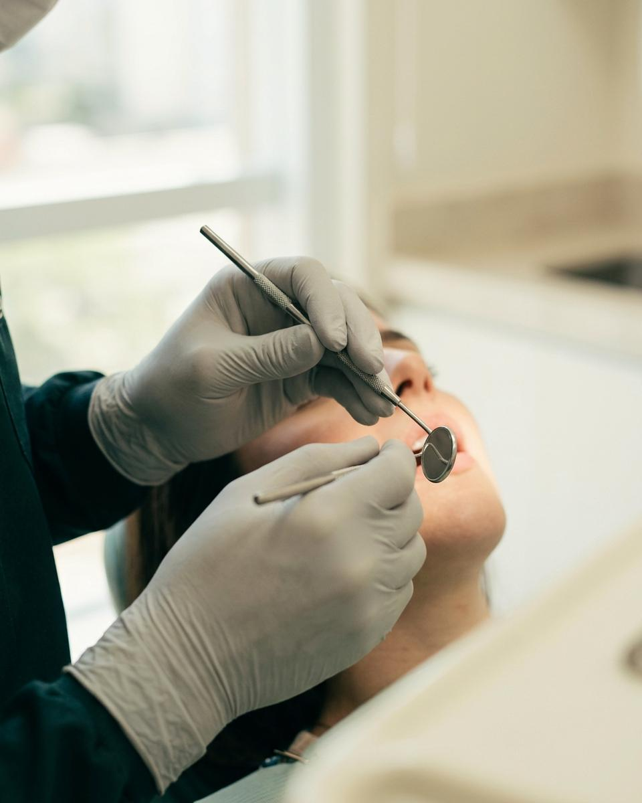
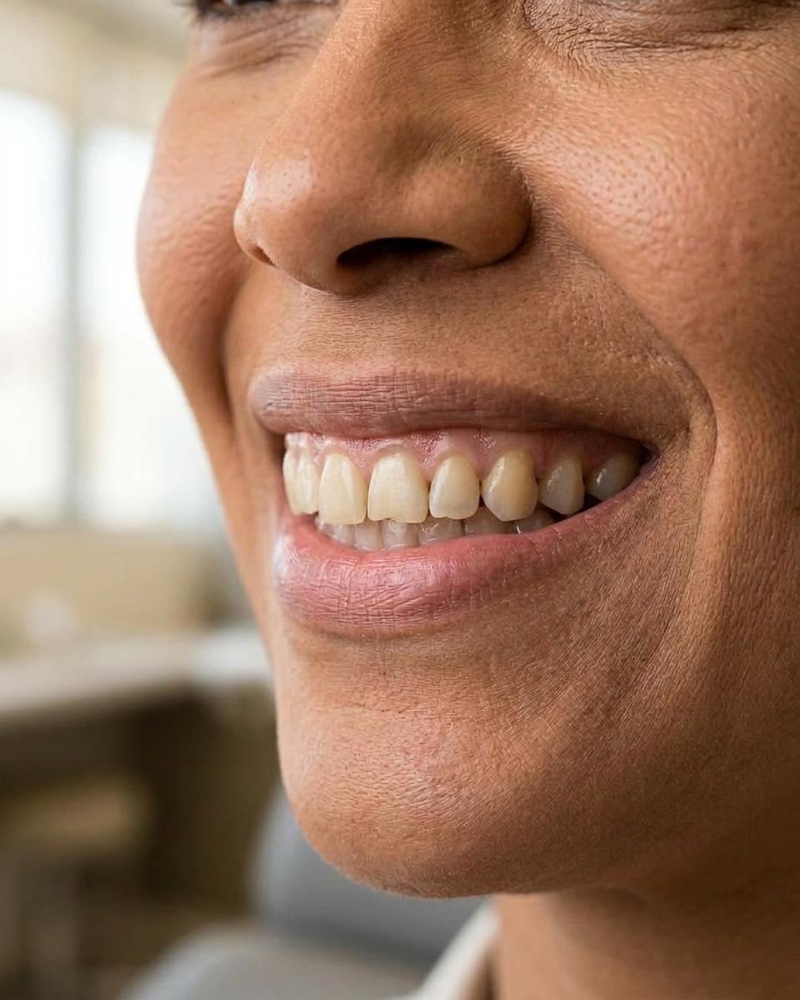

Saúde bucal com precisão e calma.
Check-up, prevenção e tratamentos para toda a família, explicados passo a passo por uma equipe que escuta antes de agir.
- Check-up e prevenção
- Tratamentos restauradores
- Estética do sorriso
Um consultório pensado para você respirar fundo.
Aqui, cada consulta começa com conversa e exame cuidadoso. Explicamos o que encontramos, as opções disponíveis e os próximos passos antes de qualquer procedimento.
-
Escuta antes de tratar Tempo dedicado para ouvir sua rotina, histórico e expectativas com calma.
-
Plano explicado Opções, etapas e cuidados apresentados com clareza para você decidir sem pressa.
-
Acompanhamento próximo Orientação preventiva e retornos planejados para manter a saúde bucal em dia.



Cuidado em cada etapa, da prevenção à reabilitação.
Selecione uma área abaixo para conhecer como funciona o atendimento no consultório:

Conversa, exame clínico e, quando indicado, exames de imagem. Você sai com um plano claro dos próximos passos.
Agendar este tratamentoEstética que respeita o seu sorriso.
Clareamento, facetas e ajustes de forma e cor planejados em conjunto com você. A indicação depende de avaliação individual.
Quero saber maisQuem cuida do seu atendimento, de perto.
Profissionais dedicados à escuta atenta, diagnóstico preciso e condução tranquila de cada etapa.
Proporção, forma e naturalidade em foco.
Role a página para revelar a transição gradual do caso ilustrativo. No computador, passe o cursor ou use as setas do teclado sobre a imagem para inspecionar a textura com a lupa de precisão.

Quatro momentos conduzidos no seu ritmo.
Do primeiro contato ao acompanhamento pós-tratamento, cada passo é pensado para oferecer clareza e tranquilidade:
Respostas claras para suas dúvidas.
Reunimos as dúvidas mais comuns antes da primeira consulta. Se preferir conversar diretamente com nossa equipe:
Falar no WhatsAppVamos conversar sobre o seu sorriso?
Escolha o que você procura ao lado para montarmos sua mensagem pronta e agilizarmos o seu atendimento.
Fácil acesso em Cidade Exemplo.
Para proteger sua privacidade e economizar dados, o mapa do Google só é carregado quando você pedir.
Abrir no Google Maps